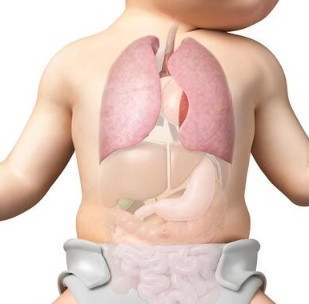
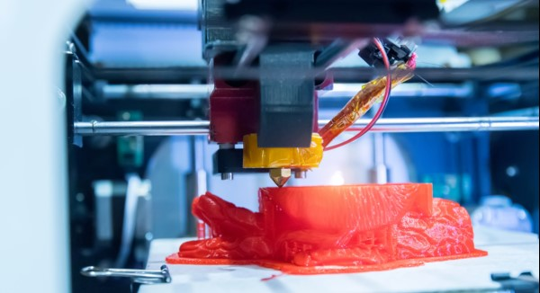

El desarrollo de los pulmones comienza en las primeras etapas del desarrollo embrionario. Aproximadamente alrededor de la sexta semana de embarazo, el sistema respiratorio comienza a formarse a partir de una estructura llamada divertículo respiratorio, que surge de la parte anterior del tubo digestivo en desarrollo.
A medida que el feto continúa creciendo, el divertículo respiratorio se divide en dos estructuras llamadas brotes bronquiales, uno para cada pulmón. Estos brotes se ramifican repetidamente, formando un árbol bronquial complejo con conductos cada vez más pequeños conocidos como bronquiolos. Al final de los bronquiolos se encuentran los alvéolos, que son las estructuras diminutas donde se lleva a cabo el intercambio de gases.
La formación de los pulmones implica la interacción de diversos factores genéticos y moleculares. La presencia de líquido amniótico en los pulmones también es importante para su desarrollo adecuado, ya que ayuda a expandir los tejidos pulmonares y permite la maduración de las células que revisten los alvéolos.
Es importante destacar que los pulmones se desarrollan principalmente durante el período prenatal. Una vez que un bebé nace, sus pulmones continúan madurando y adaptándose al entorno externo para permitir una respiración adecuada.

1. Adquisición de datos: Se utilizan técnicas de imagenología, como la tomografía computarizada (TC) o la resonancia magnética (RM), para obtener imágenes detalladas del pulmón de un paciente o un modelo de referencia.
2. Diseño del modelo: A partir de los datos obtenidos, se crea un modelo tridimensional digital del pulmón utilizando software de diseño asistido por computadora (CAD). Este modelo representa la estructura anatómica del pulmón, incluyendo los bronquios, los alvéolos y los vasos sanguíneos.
3. Impresión 3D: Utilizando la tecnología de impresión 3D, el modelo digital se traduce en un objeto físico capa por capa. Se pueden utilizar diferentes materiales para imprimir los diferentes componentes del pulmón, como hidrogeles biocompatibles y células vivas.
4. Cultivo celular: Una vez que se ha impreso el andamio tridimensional del pulmón, se pueden sembrar células pulmonares en él. Estas células pueden provenir de muestras del propio paciente o de células cultivadas en el laboratorio. Las células se colocan en el andamio impreso y se cultivan en un ambiente adecuado para su crecimiento y diferenciación.
5. Maduración y funcionalidad: A medida que las células se desarrollan y se comunican entre sí, el tejido pulmonar impreso comienza a madurar y adquirir funcionalidad. Las células pulmonares pueden formar los conductos de aire, los alvéolos y los vasos sanguíneos, permitiendo el intercambio de gases.
